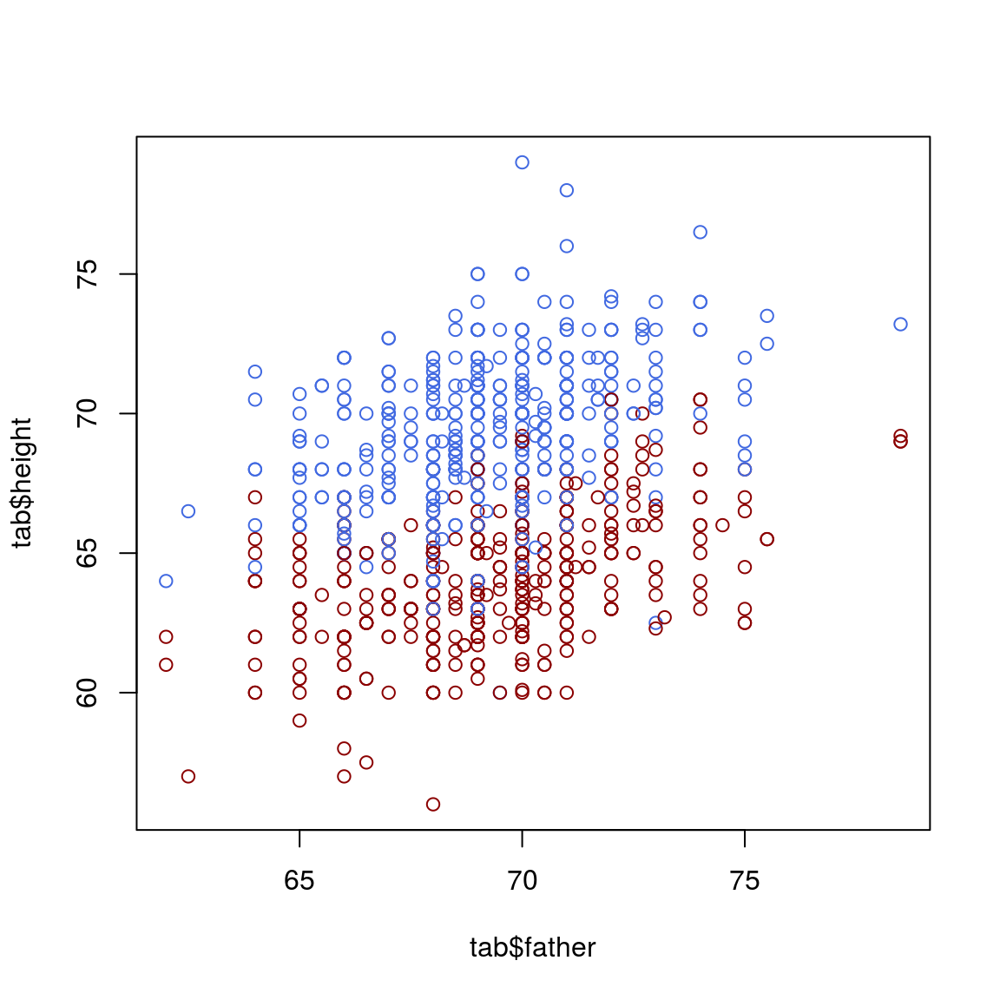
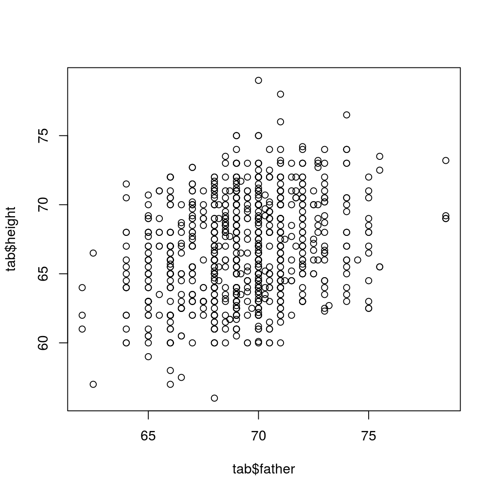

3 Plot in R
3.1 Read the data
Consider the data collected by Francis Galton in the 1880s, stored in a modern format in the galton.csv file. In this file, heights is the variable containing the child’s heights, while the father’s and mother’s height is contained in the variables father and mother. The family variable is a numerical code identifying children in the same family; the number of kids in this family is in nkids.
## Data from https://github.com/thomas-haslwanter/statsintro_python/blob/master/ISP/Code_Quantlets/08_TestsMeanValues/anovaOneway/galton.csv
tab<-read.csv("data/galton.csv")
head(tab)## family father mother sex height nkids
## 1 1 78.5 67.0 M 73.2 4
## 2 1 78.5 67.0 F 69.2 4
## 3 1 78.5 67.0 F 69.0 4
## 4 1 78.5 67.0 F 69.0 4
## 5 2 75.5 66.5 M 73.5 4
## 6 2 75.5 66.5 M 72.5 43.2 Line plot
3.3 Basic line plot
plot(tab$father, tab$height)
3.4 Color the dots based on the sex information
col_info = ifelse(tab$sex=="M", "royalblue", "darkred")
plot(tab$father, tab$height, col=col_info)
col_info = ifelse(tab$sex=="M", "royalblue", "darkred")
plot(tab$father, tab$height, col=col_info, xlim=c(60, 80), ylim=c(60, 80))
legend(76, 65,pch=c(19,19),col=c("royalblue", "darkred"),c("female", "male"),bty="o",cex=.8)
3.5
meth_lev=read.table("data/global_meth_lev.tsv", header=TRUE)
meth_lev## Sample CG CHG CHH
## 1 cmt23 0.227 0.009 0.011
## 2 cmt2-3 0.229 0.062 0.010
## 3 drm12cmt23 0.221 0.004 0.005
## 4 drm12cmt2 0.222 0.059 0.005
## 5 WT 0.247 0.079 0.0293.6 Draw a circle in R
# initialize a plot
plot(c(-1, 1), c(-1, 1), type = "n")
# prepare "circle data"
radius <- 1
theta <- seq(0, 2 * pi, length = 200)
# draw the circle
lines(x = radius * cos(theta), y = radius * sin(theta))